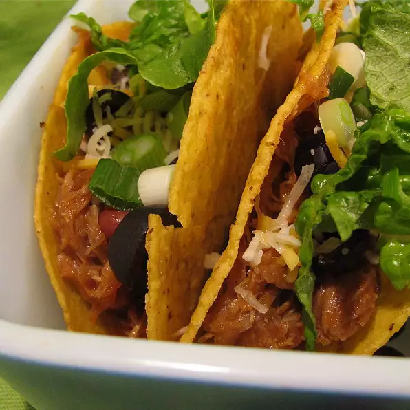

Tacos

It doesn't take very long to whip up a fun meal with this recipe for cowboy tacos. Cowboys love these meaty
tacos with chili beans and olives.
Ingredients (for 6 servings)
-
½ pound cubed or minced pork stew meat
-
½ (1.25 ounce) package taco seasoning mix
-
½ tablespoon vegetable oil
-
½ cup chunky salsa
-
½ (16 ounce) can chili beans, undrained
-
2 ½ tablespoons and ½ teaspoon apricot preserves
-
½ (10 ounce) can sliced ripe olives, for topping
Directions
-
Toss pork meat with taco seasoning mix in a plastic resealable bag until coated.
-
Heat oil in a skillet over medium-high heat. Fry seasoned pork in hot oil, stirring occasionally, until pork
is no longer pink.
-
Stir salsa, beans, and apricot preserves into the skillet with pork. Reduce heat to low; simmer until heated
through, about 10 minutes.
-
Spoon 1/3 cup pork mixture into each taco shell and top with sliced olives.